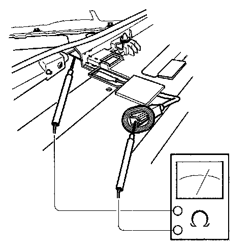
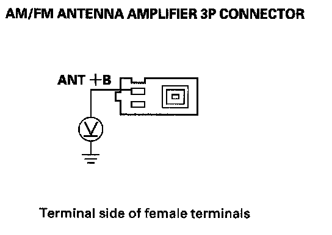
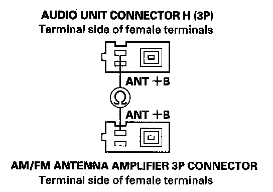
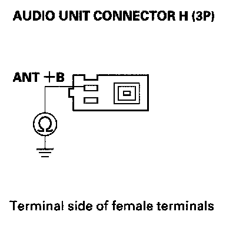
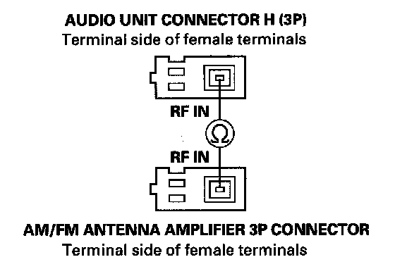
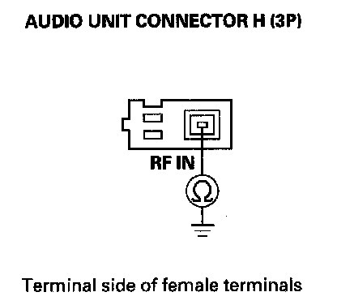
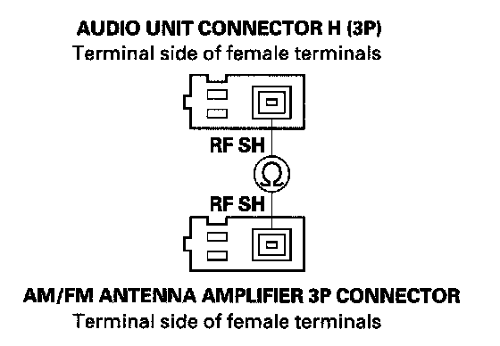
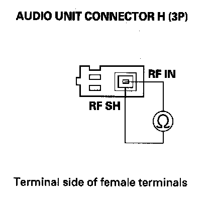

Poor AM or FM Radio Reception or Interference
Poor AM or FM radio reception or interferenceNOTE: Check the radio reception in an open area. Poor reception/interference can be caused by the following:
- The radio station is far away.
- Tall buildings, mountains, or high-voltage power lines are nearby.
1. Do the seek stop test.
Is the test vehicle within 10 % of the known-good vehicle?
YES - Multipath interference or weak station. Operation is normal.
NO - Go to step 2.
2. Check if the radio reception/interference is the same in several locations.
Is the reception/interference the same?
YES - Go to step 3.
NO - Multipath interference or weak station. Operation is normal.
3. Check the reception/interference while the engine is running.
Is there noise (static or whine) only with the engine running?
YES - Check the antenna and radio grounds. If OK, check the charging system and the ignition system.
NO - Go to step 4.
4. Remove the tailgate spoiler trim.

5. Touch one tester probe to the antenna element 1P connector No. 1 terminal, and the other tester probe at the antenna element to check for continuity. Repair if there is continuity.
6. Go into the self-diagnostic mode and use the "Tuner communication check mode".
Is the tuner communication OK?
YES - Go to step 7.
NO - Audio unit is faulty, replace the audio unit.
7. Remove the audio unit. Check that the AM/FM antenna lead and sub-lead are properly connected.
Are they connected properly?
YES - Go to step 8.
NO - Reconnect the connector, and recheck the function.
8. Disconnect the AM/FM antenna amplifier 3P connector.

9. With the radio turned ON, measure the voltage between AM/FM antenna amplifier 3P connector No. 3 terminal and body ground.
Is there battery voltage?
YES - Go to step 14.
NO - Go to step 10.
10. Remove the audio unit.
11. Disconnect audio unit connector H (3P).

12. Check for continuity between the audio unit connector H (3P) No. 3 terminal and AM/FM antenna amplifier 3P connector No. 3 terminal.
Is there continuity?
YES - Go to step 13.
NO - Repair open in the wire between audio unit and the AM/FM antenna amplifier. Also check the antenna lead/sublead connector.

13. Check for continuity between the audio unit connector H (3P) No. 3 terminal and body ground.
Is there continuity?
YES - Repair short to body ground in the wire between audio unit and the AM/FM antenna amplifier.
NO - Audio unit is faulty, replace the audio unit.
14. Remove the audio unit.
15. Disconnect audio unit connector H (3P).

16. Check for continuity between the audio unit connector H (3P) No. 1 terminal and AM/FM antenna amplifier 3P connector No. 1 terminal.
Is there continuity?
YES - Go to step 17.
NO - AM/FM antenna lead and/or sublead is faulty, replace the AM/FM antenna lead and/or sublead.

17. Check for continuity between the audio unit connector H (3P) No. 1 terminal and body ground.
Is there continuity?
YES - AM/FM antenna lead and/or sublead is faulty, replace the AM/FM antenna lead and/or sublead.
NO - Go to step 18.

18. Check for continuity between the audio unit connector H (3P) No. 2 terminal and AM/FM antenna amplifier 3P connector No. 2 terminal.
Is there continuity?
YES - Go to step 19.
NO - AM/FM antenna lead and/or sublead is faulty, replace the AM/FM antenna lead and/or sublead.

19. Check for continuity between the audio unit connector H (3P) terminal No. 1 and No. 2.
Is there continuity?
YES - Replace the AM/FM antenna and recheck. If the reception is still poor, replace the audio unit.
NO - AM/FM antenna lead and/or sublead is faulty, replace the AM/FM antenna lead and/or sublead.